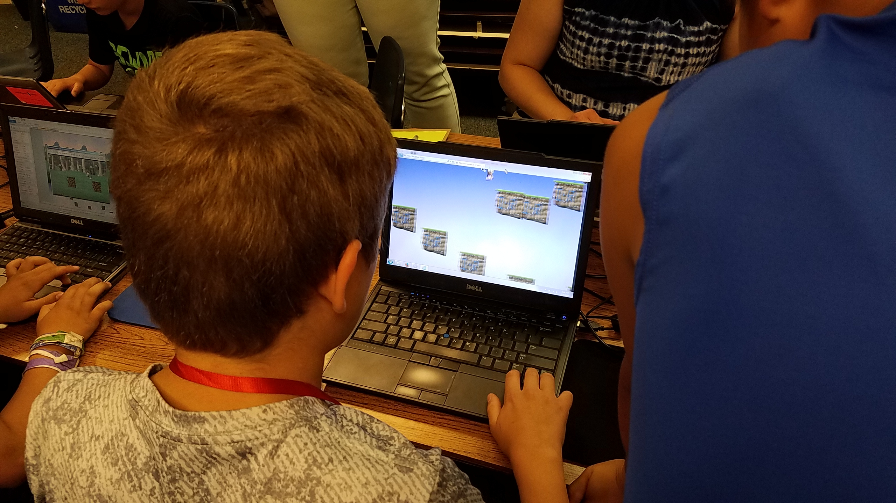

I'm a college student at the University of Wisconsin Eau Claire studying Computer Science. I've been raised around computers and tinkering with them since I was 12. Safe to say I was naturally curious.
When I was 12, I was gifted an older Lenovo ThinkPad W530 for Christmas. It was already an aging laptop when I received it, so a few years later I got a Lenovo Thinkpad P50 (both were retired work laptops). Eventually in my junior year of high school, I wanted greater portability in my laptop, so I purchased a Framework 13 and I've been using it ever since. Here's a picture of me in a game programming camp in summer making a game in the engine Construct 2 in 2017.

I have my dad to thank for being a big part of how I got interested in computers. His resourcefulness is how I was gifted my first two laptops. Love you Mom and Dad for all your help. <3
More recently, I've made a search engine with a few friends (check it out here on GitHub) and gotten through my first year of college schooling.
I'm well versed in working with Linux systems and proficient in using Windows and MacOS. I've dabbled in a wide variety of languages but my languages of choice are Python, Java, Bash C, and HTML/CSS/Javascript. Outside of that here's an abbreviated list with highlights of my experience:
Someone uses dark mode I see.
{kind=link}